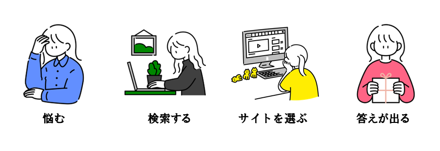
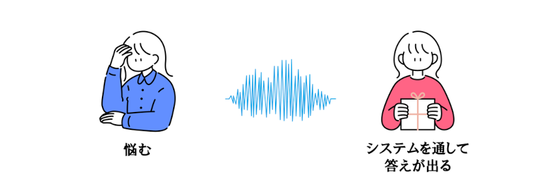
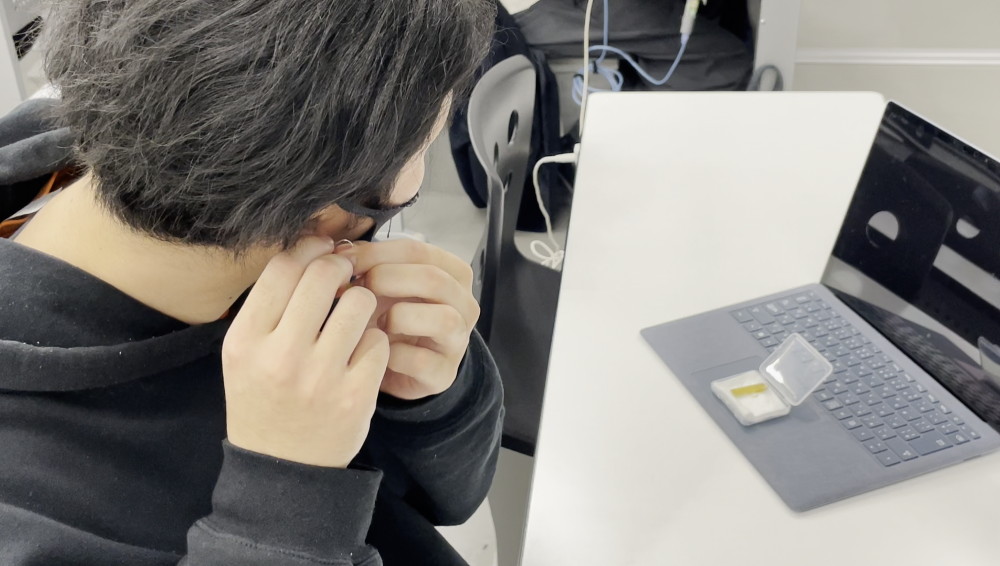

思い出す手間を勝手にやってくれる・サポートする。
という言葉をコンセプトに本機能を作成いたしました。
ピアス型デバイスから脳波を読み取り。悩んでいるかを検知。
悩んでも「この間のアレなんだっけ？」を思い出すかのように教えます。
数年後はそうなっているのではないかという考察とともに、
今回はそれらの機能の一部をデモ版として再現しました。
ダウンロード検索している時間って
もったいなく感じませんか？
「悩む」や「検索する」、「サイトを選ぶ」などそういう時間ってもったいないと感じませんか？


悩んで即検索は
ナンセンスの時代へ
「検索する」や「サイトを選ぶ」などの時間が無くなり今後それらは不要な時間となります

システムの使い方
step1
ピアス型のデバイスをつけます
先ずはピアス型のデバイスを付けてください
デバイスを日常的に付けることでこのシステムは真価を発揮します


step2
2.授業などを受ける
ピアスを付けたまま授業を受けたり日々の勉強を行うことでどんどんデバイス内に辞書として登録されていきます

step3
3.悩みを検知して答えを教えます
脳波から悩んでいることをデバイスが検知し事前に登録した辞書から答えを導きだします
そうして答えを思い出すかのようにデバイスが教えます